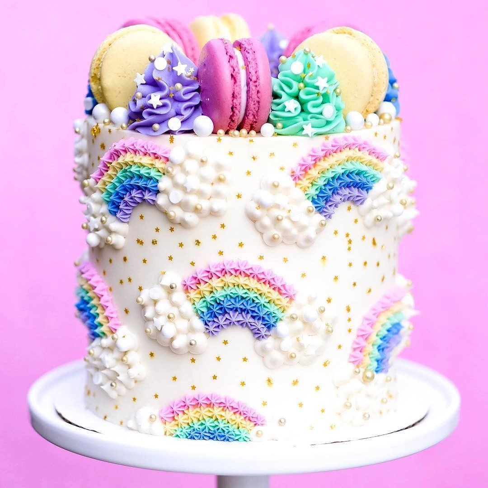
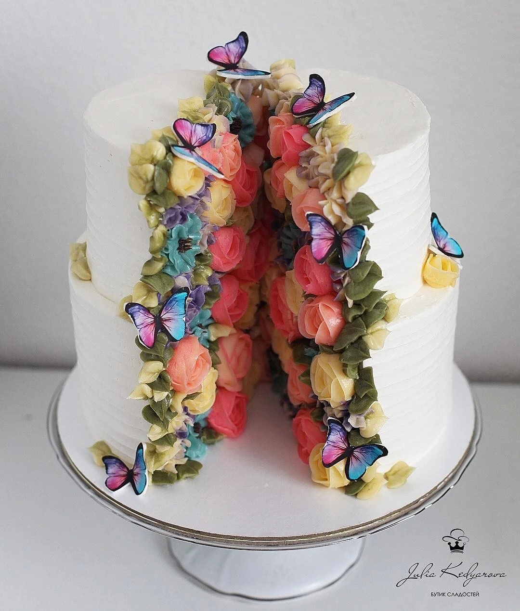
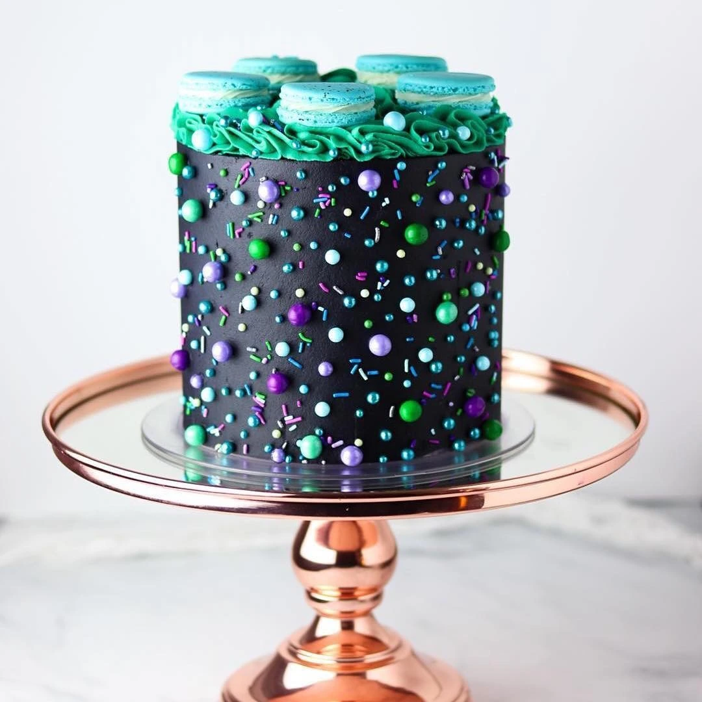
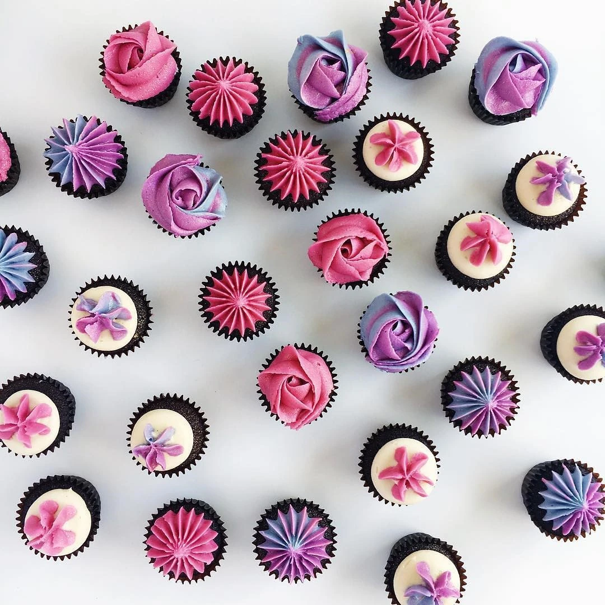
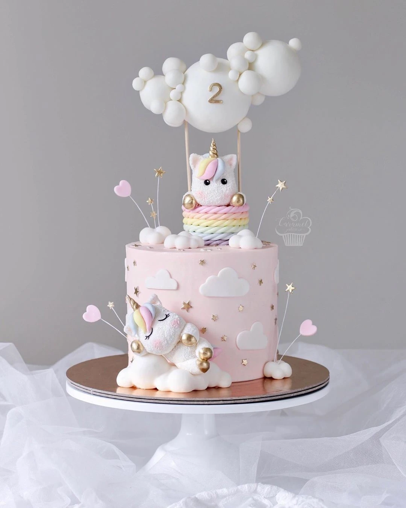

OWNER + SOCIAL MEDIA SPECIALIST
A little icing.
A lot of inspiration.
A meeting place for cake lovers, bakers and beautiful ideas. Connect with Darren, the person behind Cakes That Inspire.

a littlecake magic
Beautiful ideas,
by the slice.
A little window into Cakes That Inspire. Choose a starting point and connect directly.

EXPLORE / CONNECT
Cake inspiration
Colour, detail and creative cake ideas from the original Cakes That Inspire archive.
Talk to Darren ↗


ONE CARD. A NEW CONVERSATION.